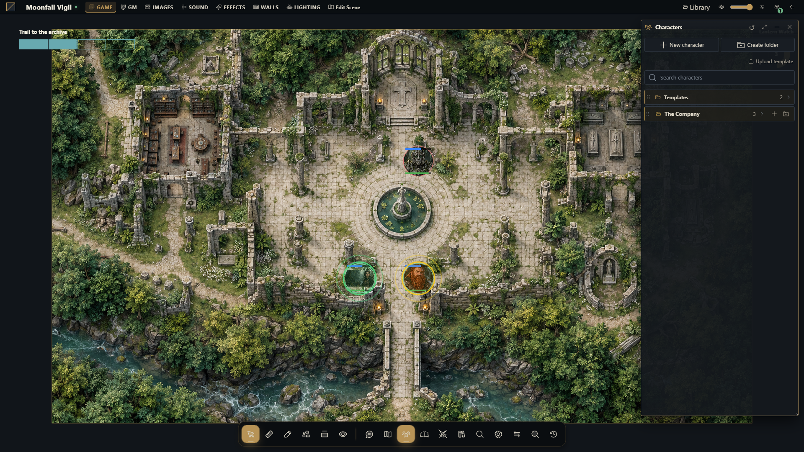
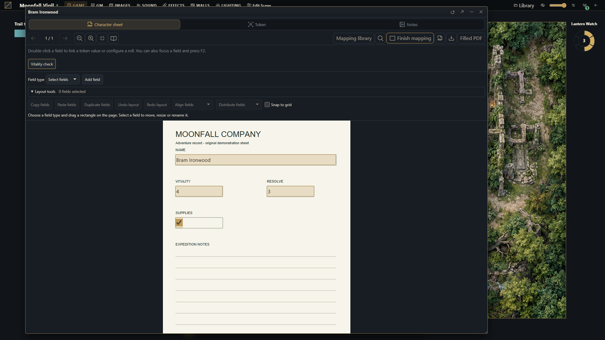

Atores e diretório de personagens
Organize personagens reutilizáveis, conceda propriedade e coloque suas representações nas cenas.


Ator ou token?
Um ator é um documento reutilizável de personagem na campanha. Um token é sua representação numa cena. Dados da ficha e posição ou estado visual do token são relacionados, mas diferentes. O sistema da campanha fornece tipos de ator e comportamento de ficha; o PDF nativo usa o tipo character.
Prepare um personagem
Como mestre, abra o diretório de atores e crie um ator de tipo suportado.
Dê um nome claro e organize-o numa pasta. Adicione retrato ou arte de token que você tenha direito de usar.
Abra a ficha. No sistema nativo, anexe e configure o PDF; em sistemas instalados, siga os controles fornecidos pelo pacote.
Configure as permissões para o jogador pretendido. Propriedade permite editar; somente leitura não.
Coloque um token na cena pretendida e confira origem da ficha e aparência.
Verifique abertura, edição e movimento numa sessão separada de jogador.
Reutilize personagens intencionalmente
Um token vinculado lê os dados do ator. Um token snapshot mantém uma cópia independente para aquela peça. Isso importa ao usar várias criaturas baseadas num ator: editar uma criatura independente não deve alterar a fonte reutilizável por engano. Confira o modo de vínculo antes de mudar recursos pela ficha do token.
Pastas organizam o diretório, mas não substituem permissões. Excluir ou alterar assets pode afetar documentos que os reutilizam; confira referências antes de remover uma imagem compartilhada.
Solucione problemas
Se o jogador não vê o ator, confira vínculo e permissões. Se abre sem poder editar, confira propriedade. Se a ficha do token difere da ficha do diretório, veja se utiliza snapshot. Se faltarem campos esperados, verifique o sistema da campanha e a versão instalada, sem presumir que todos os sistemas tenham o mesmo formato.
O núcleo não inclui catálogo universal de itens nem regras específicas de RPG. O PDF nativo não fornece tipos de itens; instale um pacote de sistema adequado quando precisar dessas capacidades.
Mais capturas deste guia (2)

